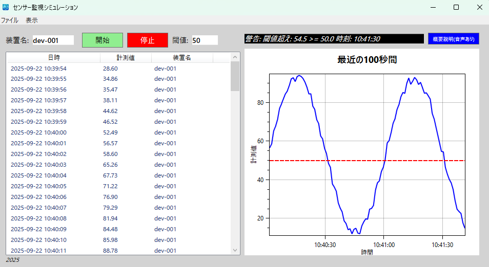
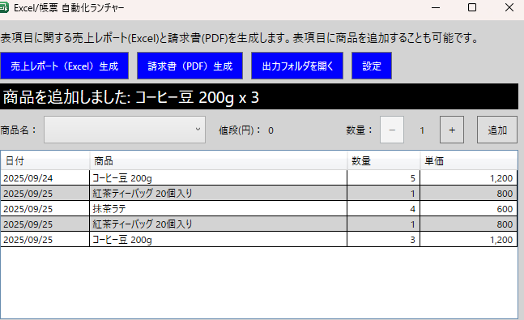

C# / .NET / WPF（過去実務ベースの再現サンプル）
C#（Desktop / WPF）実績サンプル
現場業務の課題を意識した Windows デスクトップアプリ 2件を紹介します（機能・使用技術・スクリーンショット）。
※ 本ページは「過去実務で培ったC#デスクトップ開発力」を、守秘義務に配慮して再構成したサンプルです（固有情報・顧客情報は含みません）。
仮想センサー監視シミュレーション（設備ユーザー向け想定）
リアルタイム可視化 & アラート通知
仮想センサーのストリームを生成し折れ線グラフで可視化。しきい値超過でトースト通知・ログ出力、設定は JSON ホットリロードに対応。

Excel / 帳票ランチャー（業務ユーザー向け想定）
テンプレ × データで一括帳票出力
JSONデータを読み込み、Excelテンプレ + ClosedXML / QuestPDF でレポートを一括生成。ジョブはランチャーUIから選択し、設定は JSON ホットリロード対応。

About
製造業の現場システムと連携するデスクトップアプリの開発・保守を中心に、7年以上の経験があります（PLC連携、TCP通信、WPF業務アプリ）。 現在は業務系Web（ASP.NET Core / Next.js、Java / Spring）も並行して強化中です。
本ページは業務説明会向けの参考資料として作成しています。ご連絡は担当営業（HAL）経由でお願いいたします。
GitHub：こちら（任意閲覧）